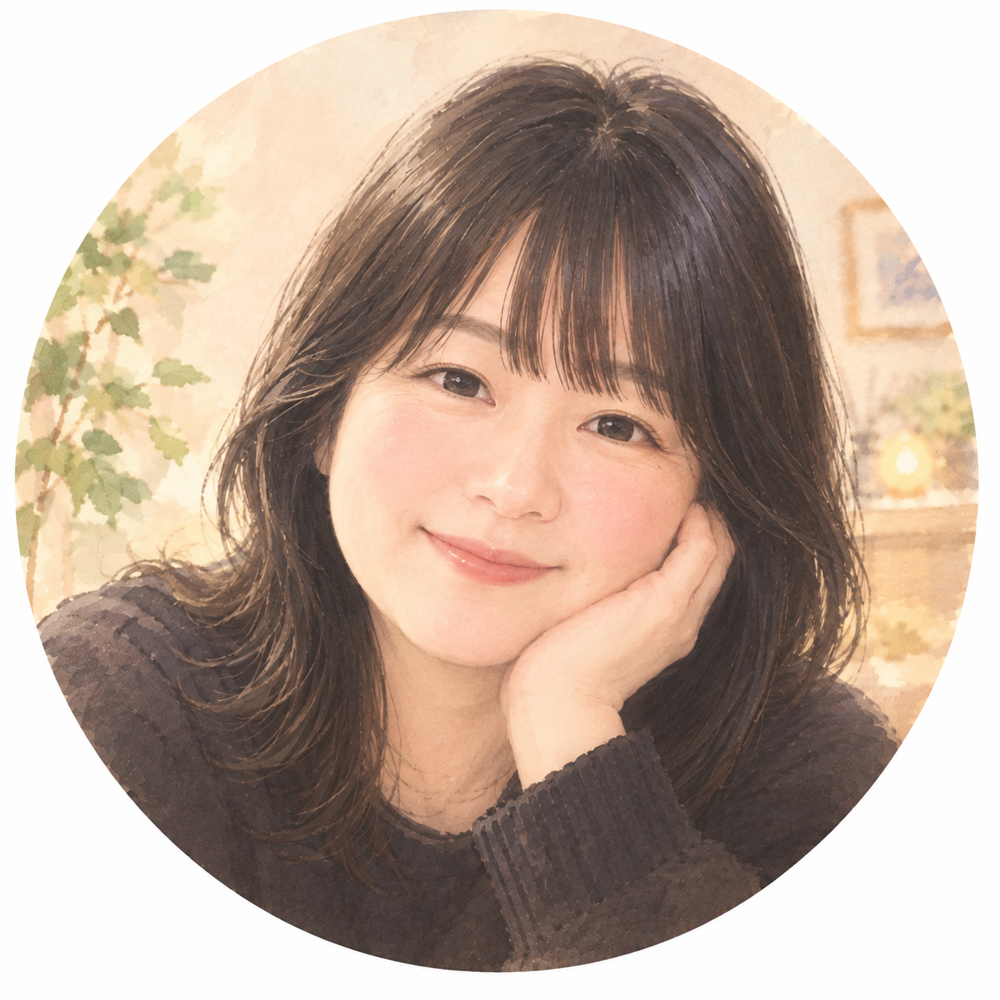

はじめまして、けいです
はじめまして。けいです。
ネイリストとして15年間、たくさんの女性の爪と手元に向き合ってきました💅
実は私自身、昔は深爪や噛み爪に悩み、人に手を見られることが嫌だった時期があります。
「きれいな手元になりたい」
そんな思いからネイルを学び、ネイルスクールに通い、ネイリストとして仕事を続けてきました。
そしてアラフィフになった今、更年期の影響もあってか、手のしびれなどを感じるようになり、長年続けてきたネイルサロンを閉店することにしました。
正直、少し寂しい気持ちもあります。
でも――
15年間、せっかく勉強してきたこと。たくさんのお客様の爪を見てきた経験。自分自身が爪に悩んできた経験。
これを「サロンを閉めたから終わり」にしたくない。
だからこれからは、
など、「爪をきれいにしたいけど、どうしたらいいの?」そんな大人女性のお悩みに寄り添いながら、私がこれまで学んできた知識や経験を少しずつ発信していきたいと思っています。
ネイルサロンという形ではなくても、今度は発信を通して、誰かの「きれいになりたい」をお手伝いできたら嬉しいです。
48歳。
まだまだ私も、これから✨
どうぞよろしくお願いします☺️
爪の悩みを見てみる職場でバレたくない
「規定で派手な色はNG」「でもケアはちゃんとしたい」というお悩みは意外とよく聞きます。色を楽しむというより、爪の表面を整えて清潔感を出す発想に切り替えるのがコツ。ツヤを抑えたマット仕上げや、クリア系のベースコートだけの仕上げなら、派手にならずきちんとケアしている印象を残せます。
万一バレてもぺろっと剥がせるジェルネイルならチャレンジしやすいです。ベースジェルを塗布後カラージェル・トップジェルを塗るだけでジェルネイルが完成、工程ごとにネイルライトで固めるので乾かす手間もありません。
もっと本格的に楽しみたい方へ
道具の選び方から、剥がせるジェルの塗り方4ステップ、バレにくい色選びまで。職場でバレずに楽しむセルフジェルネイルの手順をまとめました。
セルフジェルネイルの手順を見る →